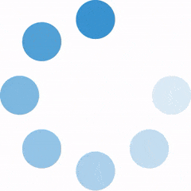

Find uncataloged DOIs in WOS text
DOIs extracted from WOS Text
Input from WOS
Paste WOS text here ...
extract DOIs
DOI Report

Previously Cataloged (
)
Not Yet Cataloged (
)
Copy not-yet cataloged DOIs to clipboard